Vanessa English Vocabulary Lessons 合集笔记
Advanced English Vocabulary Words and PhrasalVerbs
Vocabulary 词汇
phrasal verb 短语动词
idiom 习语;成语;惯用语
1 To Pick up
学会,染上
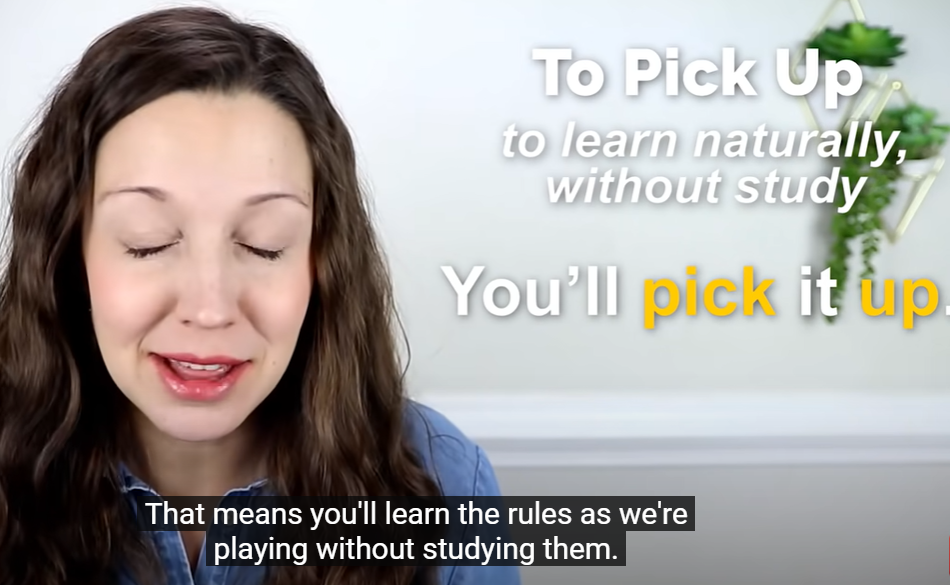
你会学会的（你会在玩的过程中自然体会到，不需要刻意学习)
My 5 year old daughter picked up some bad habits when she visited our neighbor’s house
染上坏习惯
2 To be a Stretch
唐突,鲁莽,不切实际,离谱,八竿子打不着
单字意思： stretching 伸展,延申 stretching is the kind of exercise that you do before you go running
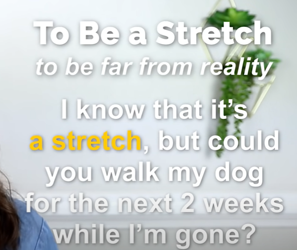
我知道这听起来很鲁莽/唐突，但是你能接下来2周我不在的时候帮我遛狗吗
so you’re already letting them know, i know is’s a big deal , i know that this is a lot to ask you and you’re adding that expression, i know that it’s a stretch
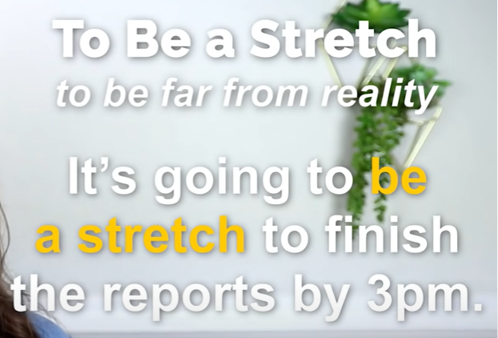
要在下午3点就弄好这个报告似乎有点不切实际(很难,不是完全不可能,但是有点难)啊
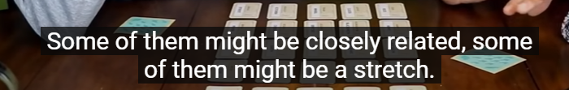
他们中有些含义非常近,有些可能八竿子打不着(牵强,远的离谱)
3 To Mark Off
标记已完成/关
it means you’re noting something as completed .
It’s the same as to check off something, you are marking it off
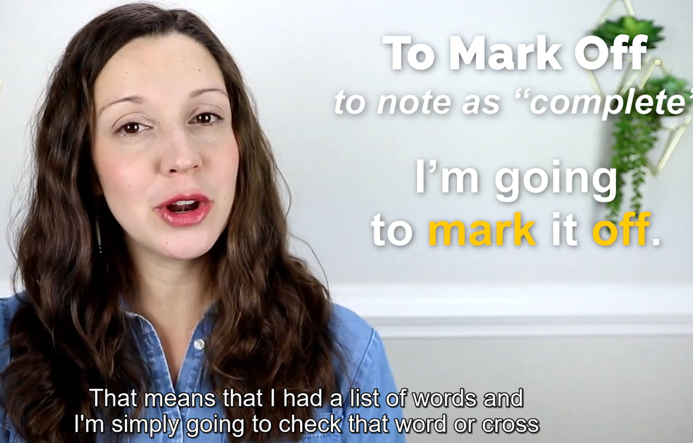
to mark off sth
to check off sth
to cross off sth
都是一样的意思
i feel satisfield when i mark off items from my to do list
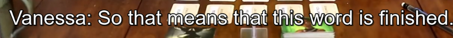
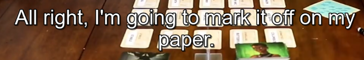
4 To Give Away
泄露 ,透露一个秘密; 赠送；送出；背叛；
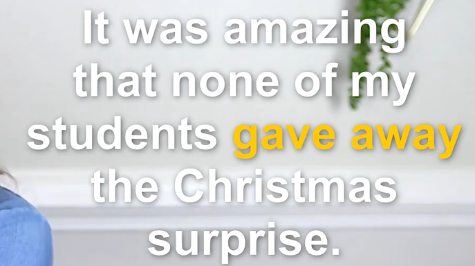
to give away sth 透露某事
give it away 透露
5 To Clash With Sth
This means that it doesn’t go with , it goes against something
和某物不搭，不协调
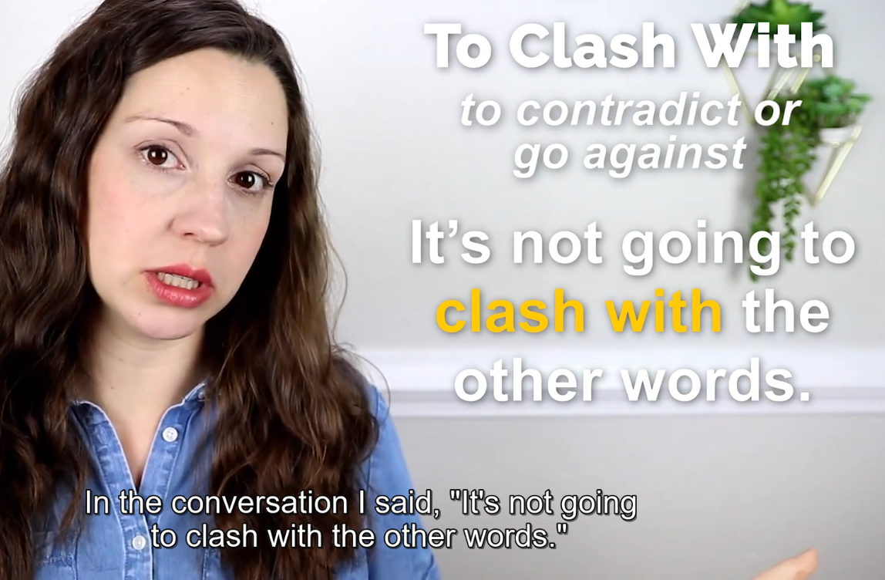
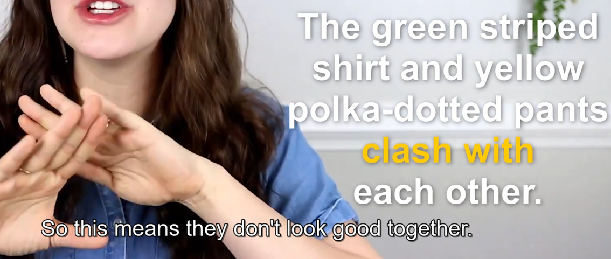
means they don’t look good together .
They clash with each other
6 To Start Out With
This is used when you’re starting a series of events, So Other things are going to happen after that first event
以…作为开始
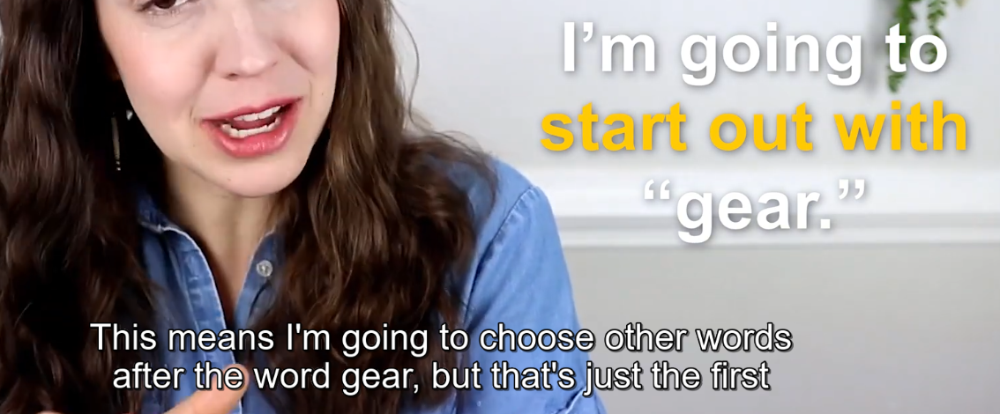
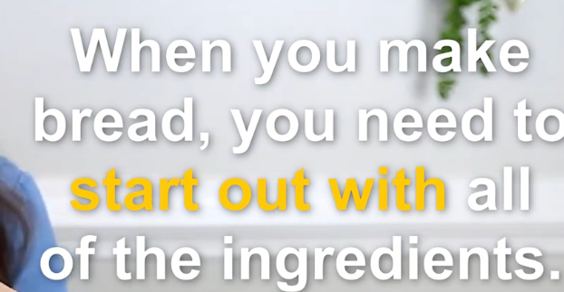
当你要做面包时，你需要实现准备好所有原料
ingredients 成分;(尤指烹饪)原料;(成功的)因素，要素
7 To Be Lame
lame通常是指某人不能行走。 但是这个短语里面它是指不酷，不好
该短语很常见 means sth not very cool
It’s lame of me to do this
Means not cool for me to do this
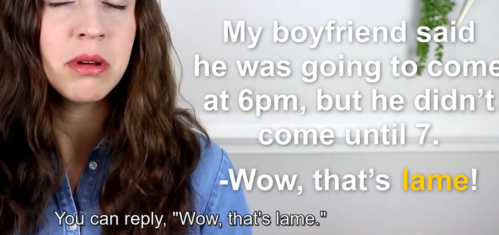
所以如果有人和你说了一件很糗的事，很逊的事，很suck的事，你可以回复Wow,that’s lame
8 To Go With Sth
chose sth 选择某事，做某事，着手干某事
餐馆场景
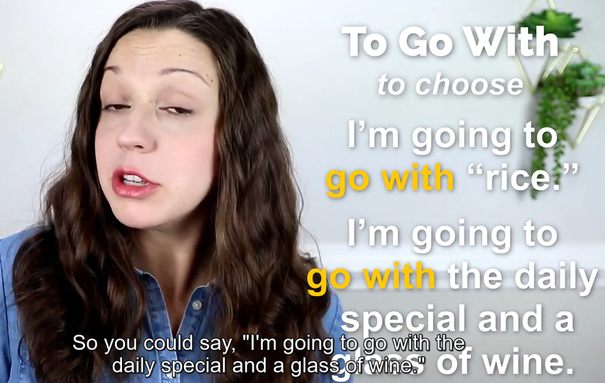
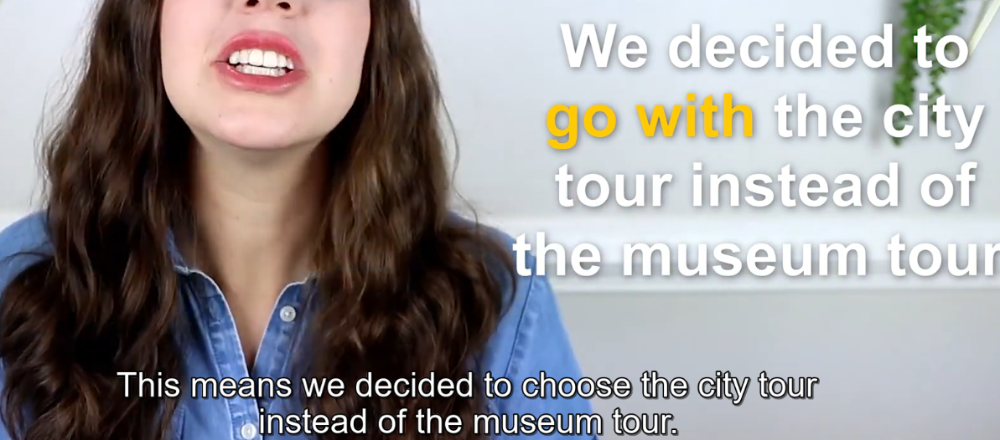
这个短语是 另一种选择某事的说法
9 To Use Up
用尽
This means to use something completely , nothing left
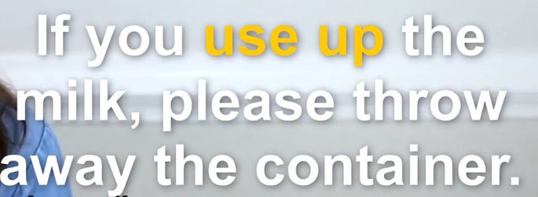
10 To Jump Out At
this means it’s just easy to see something ，nothing is obvious
显而易见的,很容易发现的 ，很突出
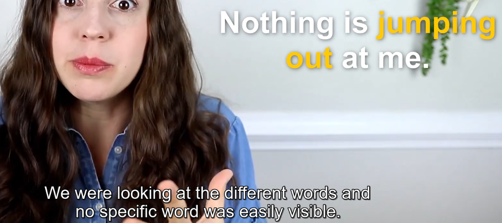
如果老师问你问题，你想不出这个问题的答案，你可以回答： Nothing jumped out at me , i have no idea what the answer is .
so it means sth on the page is almost jumping out at you , so it’s easily visible
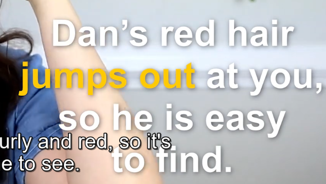
丹的头发很显而易见，所以他很容易被找到(发现)
11 Hail Mary
最后一次机会
final desperate change
mary是耶稣的妈妈
This means a final desperate attempt to do something .
desperate 令人绝望的
在某个体育比赛，例如足球， 橄榄球，篮球， 比分一模一样，或者快要输了（绝杀类型的） ，运动员最后一投，最后一脚 ，最后一次尝试。那就是Hail Mary Change
Hail mary guess 你还有最后一次机会来猜
Hail Mary Change 你还有最后一次机会
After she broke up with him, he sent her flowers, chocolate, and a love note as a Hail Mary attempt to win her back.
12 A Toss -Up
这看起来像是个短语动词，但其实这是个名词，前面需要加一个a
(发生几率各半的)相等机会;难以定夺的事
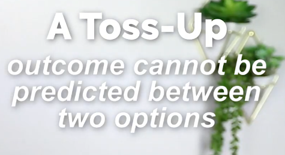
toss (轻轻或漫不经心地)扔，抛，掷;甩
outcome: 效果，结果
predicted : 预言;预告;预报
It is unpredictable which one is going to be chosen
I don’t know who’ll get the job – it’s a toss-up between Carl and Steve.
I don’t know which team will win. Both have done so well this season that it’s a real toss-up.
The game’s almost over, and it’s a toss-up.
- Both teams are playing so well. it’s a toss-up who will win
13 Early one
almost the same as “early”
It’s early on in the game. 这游戏才刚刚开始。 等于It’s early in the game
I knew early on tht this leasson would help my vocabulary grow 我在这节课的一开始就知道它会帮助我词汇增长
你可以说 I realized early on that this vocabulary video would help me improve
但是你不能说: I realized early that this video would help me ,这听起来有点奇怪
14 To Go On
to happen 但是有点不一样
It’s usually when something dramatic is happening or you kind of expcet that maybe something dramatic is happening
They have fist fights going on
Go outside and find out what is going on
15 By the Seat of Your Pants
没有特定的计划,凭感觉试试看
without a clear plan
aviation 航空
以前的航空技术没那么发达，没有雷达，塔台等。飞行员靠感觉，技术飞行。
I don’t have a plan, i’m doing it by the seat of my pants
我们现在把当时的短语拿到现在来了，意思就是没有特定的计划
我们今天要学的习惯用语都来自飞机的航行。五十年前乘飞机是件惊天动地的大事，但是今天坐飞机旅行已相当于家常便饭了。美国各航空公司每天都要载运一百多万名旅客。航空事业如今这样发达的一个原因是有了无线电导航系统，但是过去在没有无线电航空信标、雷达和空中交通管制人员的时候，飞行员是怎么寻找航线的呢？他是观看地面上的铁路轨道、河流和其它陆地标记来决定航线和航向的。但是如果他穿入云层或者雨区，地面上的东西被云雾遮挡什么都看不清了，那又怎么办呢？这时飞行员就只得根据自己的直感来猜测他座下的飞机该是在什么方位了。由此而产生了这个习惯用语: fly by the seat of one’s pants。
大家也许早就知道pants是裤子，而seat在这儿是指裤子接触座位的部分。也就是裤子的臀部。飞行员的裤子当然不能为他的航向提供指点，fly by the seat of one’s pants其实是说他在茫无依据的情况下只得凭直觉猜测他座下的飞机该往哪儿开。这个习惯用语如今被用作比喻意义。我们来听个例子。这是个美国企业家在说他去越南开办企业的经历。
When I set up business in Vietnam I had to fly by the seat of my pants. I didn’t know anybody, couldn’t speak the language and had to learn the local business situation in a hurry.
他说：他在越南开办企业的时候，既不认识任何人，也不会说越南话，还得在短促的时间里了解当地的商业形势。
换句话说他是在毫无客观依傍、茫无头绪的情况下硬著头皮上马，摸索行事的。所以to fly by the seat of one’s pants解释在没有客观依据、茫无头绪的情况下只得摸索行事。
当你忘记准备你的演讲，完全忘记的时候 ，你就可以这么说
I totally forget about my presentation, so i just flew（过去时态） by the seat of my pants
presentation 开场白，演讲 ；提交; 授予; 颁发; 出示; 提出(或展示、解释等)的方式; 展示会; 介绍会; 发布会
16 To Be Hit or Miss
不可预料
to have unpredictable results
The singers new songs are really hit or miss. Some are amazing and some are just okay
这个歌手新专辑里的歌的质量真是不可预料，有的很好听，有的很难听
17 On the Back Burner
次要地位,推迟
to postpone or low priority 。 postponed 延迟;延期;展缓
推迟的或低优先级的 ， 次要地位; 搁置; 从属地位;
back burner 次要地bai位；多眼炉子的后炉眼
Back就是后边，而baiburner在这儿的是指做饭的炉子。美国的厨房里，炉台上一般都有四个炉口，前面两个，后面两个。人们往往把很快能煮好的东西放在前面炉子上煮，把一些要慢慢煮的东西放在后面的炉子上。这就是to put on the back burner这个俗语的来源。下面这个例子是一个广告公司的老板在给会计下指示：
例句-1: Joe, I know you’re working on the Anderson contract, but let’s put it on the back burner for now. We need your help on the new Jones contract–it’s worth more than five million dollars
I’ll keep it one the back burner 我把它放到后面，推迟它
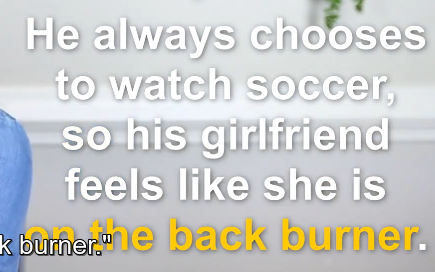
soccer足球
I fell like i’ve been on the back burner recently ,we really need to spend more quality time together
Let’s put that idea on the back burner and let’s focus on this other project first
18 To Be Clear Cut
This means it is completely free from doubt
毋庸置疑
That’s a pretty clear cut “no” . That means that there’s no doubt the answer is no
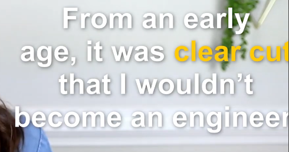
19 To Throw Off
mean’s to confuse someone or something
把人搞糊涂，糊弄
That word is throwing me off
The robber threw off the police by putting on a disguise
这个小偷通过化妆把警察糊弄了
disguise: 假扮;装扮;伪装;掩蔽;掩饰; 伪装物;化装用具;假扮;装扮;伪装
20 TO Go Over Your Head
means that you don’t understand some kind of complex idea
All the hints are going over my head .
gesture: 手势 姿势;示意动作
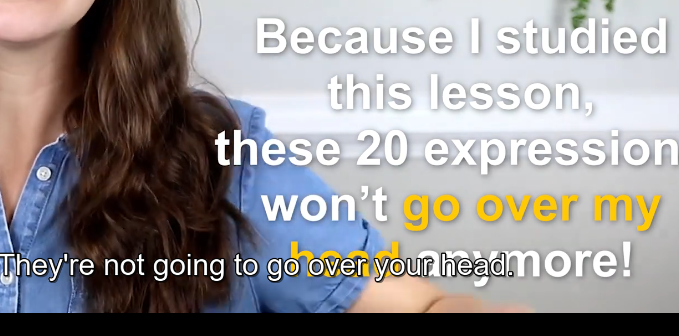
由于我学了这个课，这些单词以后我遇到了不再一脸懵逼了
视频地址
https://www.youtube.com/watch?v=yKrTY4AsB2c&list=PLKWcPfZiScgDf5Wc_Y5JZS17taUi2WWgx
如何和别人开始一场对话
Youtube: How-To-Start-A-Conversation-In-English-With-Anyone
认识的人和不认识的人.
认识的人：
问过去
What’ve you been up to lately (last weekend / recent holiday) ?
你最近在忙些什么?
问现在
What do you have going on today ?
What’ve you got going on today ? = what have you got going on today
问将来
Do you have anything fun going on this weekend?
Do you have any plans for easter(复活节)? Not Much , what about you ?
注意这个问题在西方可能意味着你想要约ta，所以使用随意的语气，微笑，light tone
intonation 语调
不认识的人
strike up 搭讪 . strike 罢工,击,打击,走向,撞,触击
遛狗：
甲：Aww, what a cute dog. Do you come here often? 乙：Yeah, we try to . It’s a great place to walk.
甲：Aww, what a cute dog. Have ever been here before? 乙： Yeah , a lot . it’s a great place to walk.
甲：Aww, what a cute dog.乙，yeah ,he’s a swettie. 甲：Have you been in Asheville(地名) for a while? 乙：just two years ，what about you ?
甲：Aww, what a cute dog. do you live nearby?
有时候别人不回答你，不要丧气，也许他们并不是个好的conversationalist. try you beat.
需要和别人有一些练习，使用英语。
practice and practice and repetition is what’s going to help you to really imorove that skill.
Simile is the best tool
Sometimes when we feel nervous, our face gets really serious and we forget to simle. But something happens when you smile, you start to loosen up ,you start to feel little more comfortable, and maybe you’ll be able to remember some of the sentences and quesions that we talked about .
This blog is under a CC BY-NC-SA 3.0 Unported License
本文链接：http://hogwartsrico.github.io/2020/06/24/Vanessa-English-Vocabulary-Lessons-Collection/